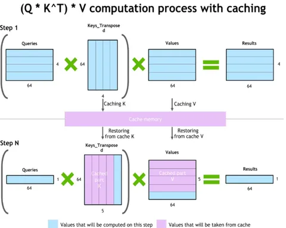

Не так давно мы разбирали статью KVZap от NVIDIA на тему сжатия KV-кэша. В этом посте сделаем шаг назад и посмотрим шире: какие в целом есть проблемы у подхода, почему он становится узким местом в проде и как решаются инфровые челленджи на практике.
В какой-то момент все, кто занимается авторегрессионными трансформерами, приходят к мысли: в каузальном аттеншне прошлые токены не зависят от нового. Значит, K и V для уже увиденных токенов можно посчитать один раз, сохранить и переиспользовать при авторегрессионной генерации. Казалось бы, — вот она, победа.
Но дальше всплывает «айсберг». KV-кэш быстро становится гигантским, потому что растёт сразу по нескольким осям: число слоёв, длина контекста, число KV‑голов, head_dim и dtype. Например, если хранить KV в FP16/BF16 (2 байта), то для контекста 8K порядок цифр на одну последовательность получается примерно такой:
- 2 ГБ для моделей 30B с GQA (зависит от точной архитектуры);
- 4 ГБ для LLaMA‑2‑7B;
- 36 ГБ для GPT‑3‑175B.
И это ещё до того, как мы вспомним о большом количестве одновременных пользователей. Закономерный вопрос: как такое внедрять в прод?
Где обычно ужимают KV-кэш
Хорошая новость: оптимизироваться можно почти по любой размерности, используя разные подходы. Например:
- по головам — Multi‑Query или Grouped‑Query Attention (меньше K/V-голов при том же числе Q-голов);
- по слоям или доступному контексту — Sliding Window Attention (держим только окно последних W-токенов);
- по dtype — квантизации;
- по head_dim — подходы, вроде Multi Latent Attention;
- и отдельный класс — умное сокращение контекста, например KVZip и KVZap.
На последнем пункте остановимся подробнее.
KVZip/KVZap — это «умное выкидывание» токенов (а точнее, KV-пар) по важности для контекста. KVZip оценивает важность через аттеншн при реконструкции промпта (teacher‑forcing) — но для этого нужен дополнительный прогон. KVZap предсказывает важность по скрытому состоянию и режет по порогу, делая сжатие адаптивным. Главное ограничение подхода — пока нет хорошей реализации, совместимой с Paged Attention (неравномерная длина кэша для голов требует работы с блоками переменной длины), что критично для использования в высоконагруженной системе.
Немного GPU-реальности
Даже с красивым прунингом остаётся системная проблема: если аллоцировать KV-кэш как один большой непрерывный блок, память со временем фрагментируется. В итоге могут оставаться «дырки», куда уже не помещаются новые большие кэши, хотя суммарно свободной памяти вроде бы достаточно. Из-за этого возникает серьёзная недоутилизация GPU-памяти.
Типовое решение — Paged Attention: KV-кэш режут на страницы фиксированного размера и управляют ими через таблицу блоков. Вместо одного большого куска появляются небольшие блоки, которыми проще управлять и переиспользовать между запросами.
Как это используют
Есть несколько популярных проектов, которые по-разному решают задачу KV-кэша. Разберём некоторые из них.
1) vLLM — цельный inference‑движок вокруг Paged Attention
Плюсы:
- зрелая реализация paged‑подхода;
- multi‑GPU (tensor parallel) и коммуникации через NCCL;
- опенсорс.
Минусы:
- сложнее «вклинивать» нестандартные политики работы с KV (не всегда удобно расширять под свои эксперименты);
- KV‑кэш в основном локален узлу/серверу (шаринг и распределённое хранение — отдельная задача).
2) LMCache — KV‑кэш как отдельный слой (многоуровневый)
Плюсы:
- явная работа со страницами или блоками и несколькими уровнями кэша (GPU, CPU, SSD, распределённый);
- поддержка распределённого хранения KV;
- фокус на расширяемости и интеграции;
- опенсорс.
Минус:
- сочетание с оптимизациями внутри узла (NVLink/NVSwitch, tensor parallel) зависит от конкретной интеграции с движком и не всегда «из коробки».
В итоге можно сказать, что KV-кэш — важный фактор, который определяет, как модель будет работать в проде. Уже есть подходы, которые помогают сократить объём кэша, но без продуманной архитектуры хранения и управления памятью, проблему они не решают.
@RecSysChannel
Разбор подготовил
